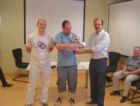

Club de Ajedrez Agustín de Leiza |
| » inicio » socios del club » cto. por equipos » últimos torneos » enlaces |
Pinchetas en Fortuna26-09-2010 Este año también
hemos acudido al torneo de pinchetas organizado en el club de Fortuna.
El propósito que tenía el club de Fortuna para la
presente edición era la de llevar a cabo un torneo entre 8
participantes a doble ronda. Sin embargo, para la hora de comienzo
sólo estábamos presentes cinco equipos, que al final
fueron seis tras la incorporación in-extremis de un segundo
equipo del club organizador. El sistema de juego fue de un
todos-contra-todos a doble ronda y después semifinales y final.

A pesar de el número reducido había un buen plantel de
equipos, allí estaban equipos de Fomento, Beraun y un fuerte
equipo de Fortuna con Roldán, Jaumandreu y Ezpeleta.
Además nunca se puede descartar al equipo de los tolosarras con
Sabino a la cabeza.Eneko recogiendo "su" trofeo En cuanto a los nuestros hasta Gros se dirigieron Iosu, Claudio, Aritz y Eneko. Nuestro torneo fue un tanto irregular. En la primera fase se perdieron solamente dos encuentros, contra Beraun y contra Tolosa, sorprendente nuestros resultados contra Tolosa ya que en los dos encuentros tanto Iosu como Claudio perdieron sus partidas, además Aritz también perdió su primer duelo contra Bustamante. Aún y todo nos conseguimos clasificar para la final, que deparó un nuevo enfrentamiento contra Fomento, encuentro que debíamos ganar ya que en la 1ª fase ellos habían quedado segundos y nosotros terceros.  El rival de Eneko en la última ronda recogiendo "su" trofeo. |